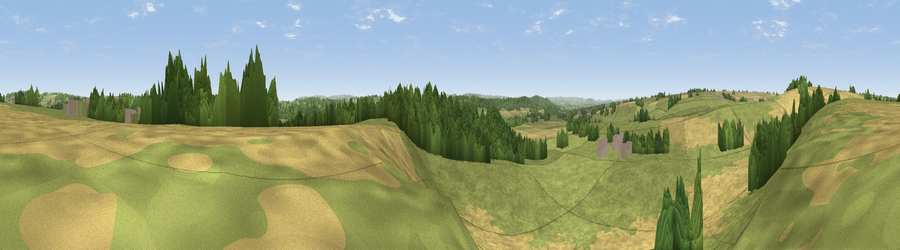

Viewpoint near Milborne Port
#24137 in England · top 49% of its area beats it · near Milborne PortThe view, rendered

A 360° render of this exact spot computed from the terrain model, tree cover and land cover — summer colours, afternoon light, calibrated against photographs of famous viewpoints. Real trees, hedges and buildings will differ in detail.
The panorama
Grey silhouette: terrain skyline in each direction (720 bearings, Earth curvature and refraction included). Dashed green: skyline with trees (+15 m) and buildings (+8 m) as obstacles. Blue strip: how far the ground is visible on each bearing.
Where the view opens
Wedge length = distance to the farthest visible ground on that bearing (vegetation-aware). Rings at 10, 25 and 50 km.
What fills the view
51% grassland · 32% cropland · 17% woodland ·
Angular shares of the visible panorama (visual magnitude), not map area. Landscape diversity 0.45 (0–1 Shannon).
Key numbers
More beautiful places nearby
The staircase of upgrades: each row has a higher view potential than everything closer. Driving times are estimates from straight-line distance, calibrated against real road routing — check an actual route before setting out.
| Place | Direction | Drive | Score |
|---|---|---|---|
| Viewpoint near Poyntington | NW · 1 km | ~3 min | 50.3 |
| Viewpoint near Poyntington | NW · 2 km | ~5 min | 50.5 |
| Viewpoint near Purse Caundle | ENE · 3 km | ~8 min | 60.4 |
| Round Hill | W · 4 km | ~9 min | 70.4 |
| The Beacon | NW · 6 km | ~12 min | 75.8 |
| Viewpoint near Lamyatt | N · 17 km | ~30 min | 77.8 |
| Viewpoint near Berwick St John | E · 26 km | ~42 min | 78.2 |
| Viewpoint near Nettlecombe | SSW · 27 km | ~43 min | 79.3 |
50.96742, -2.47737 · source: screening · position refined by local search. Computed location — check access rights before visiting.